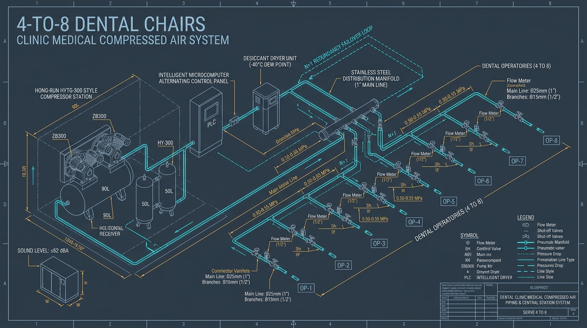
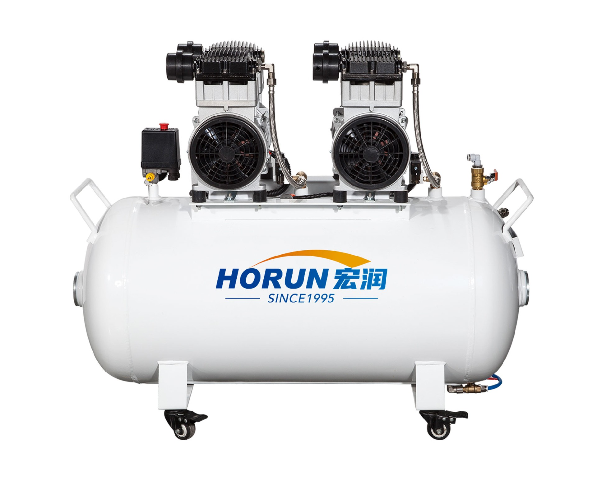

Hongrun HYTG-300 (2.2 kW / 3.0 HP) Dual-Pump Parallel Redundancy Compressor on 90L Heavy-Duty Receiver
Executive Engineering Summary: Central Station Architecture
- Mid-Scale Diversity ($k$ Factors): 4 chairs ($k=0.60$) require $\approx 160\text{--}180\text{ L/min}$; 6 chairs ($k=0.52$) require $\approx 220\text{--}250\text{ L/min}$; 8 chairs ($k=0.45$) require $\approx 300\text{--}340\text{ L/min}$ at $5.5\text{ bar}$.
- N+1 Dual-Pump Redundancy: HYTG-300 combines dual 1.1 kW ZB300 pump heads on a single 90L horizontal tank. If one head undergoes servicing, the secondary head seamlessly maintains 100% of essential clinical supply.
- Intelligent Microcomputer Alternation: Microcontroller alternates lead/lag pump status every cycle, preventing uneven PTFE ring wear and eliminating electrical peak starting spikes via 0-pressure delay logic.
- Piping Loop Hydraulics (DN25 / DN15): Sizing the main header at DN25 (1") and operatory drops at DN15 (1/2") keeps air flow velocity $\le 6\text{ m/s}$, restricting total system pressure drop to $\le 0.02\text{ MPa}$.
When a solo dental chair loses air pressure, one patient appointment is delayed. But when a 4-to-8 chair dental polyclinic or surgical center suffers sudden compressor failure, 6 to 8 clinicians grind to an immediate halt simultaneously. Anesthetic wears off mid-procedure, surgeries are aborted, sterilized instruments cannot be dried, and the clinic incurs thousands of dollars in lost billing per hour.
For mid-scale practices, the single-pump compressor model is a high-stakes gamble. This technical whitepaper outlines the engineering and economic rationale for transitioning to a dual-pump parallel redundancy architecture (HYTG-300 90L vs. HY-300 50L) to guarantee 100% operational uptime.
1. The Mid-Scale Dental Bottleneck: Why Single-Pump Systems Risk Clinic Shutdown
As a dental practice expands from 2–3 chairs to 4–8 treatment operatories, the clinical air dynamics transform fundamentally. At this scale, treatments encompass multiple simultaneous disciplines: routine restorative dentistry, high-demand air-scaler hygiene, heavy prophy sandblasting, CAD/CAM wet milling air purging, and surgical implant site drying.
Relying on a single large compressor pump head introduces four critical systemic vulnerabilities:
Single Point of Failure
A single blown valve reed, capacitor breakdown, or thermal cut-out instantly shuts down all 8 operatories simultaneously.
Thermal Fatigue & Continuous Duty
Peak concurrent demand forces a single pump into >85% continuous duty cycles, drastically overheating motor windings.
Zero Maintenance Window
Routine HEPA intake filter or valve maintenance requires complete clinic closure or expensive after-hours technician overtime.
Severe Pressure Sag
When 4 hygienists activate scalers simultaneously, undersized buffer storage causes line pressure to plummet below 0.40 MPa.
2. The Flow & Diversity Math: Simultaneous Load Calculations for 4 to 8 Chairs
As operatory counts rise, the statistical probability of all instruments operating at the exact same millisecond decreases. Medical pneumatic design accounts for this through the Simultaneous Diversity Factor ($k$) combined with total pipe network volumetric friction:
Table 1.0: 4–8 Chair Sizing Matrix, Flow Rates, and Pipe Diameter Guidelines
| Clinic Scale | Active Chairs | Diversity Factor ($k$) | Peak Clinical Flow (@ 5.0 bar) | Main Header / Branch Pipe | Recommended Hongrun Solution |
|---|---|---|---|---|---|
| Compact 3–4 Chair Clinic | 3 – 4 Chairs | 0.60 – 0.65 | 140 – 170 L/min | DN20 (3/4") / DN15 (1/2") | HY-300 (1.1 kW) or HYTG-300 |
| Standard 4–6 Chair Polyclinic | 4 – 6 Chairs | 0.50 – 0.55 | 220 – 260 L/min | DN25 (1") / DN15 (1/2") | HYTG-300 (2.2 kW · 90L) |
| High-Volume 6–8 Chair Center | 6 – 8 Chairs | 0.45 – 0.48 | 300 – 350 L/min | DN25 (1") / DN15 (1/2") | HYT-400 / HYT-500 (3.3–4.4 kW) |
| 8–12 Chair Surgical Hospital | 8 – 12 Chairs | 0.40 – 0.45 | 420 – 520 L/min | DN32 (1-1/4") / DN15 (1/2") | HYT-500 (4.4 kW · 200L) |

4–8 Chair Closed-Loop Ring Manifold (DN25 Main / DN15 Drops), Desiccant Dryer Station, and N+1 Redundancy Failover Loop
3. HYTG-300 (90L) vs. HY-300 (50L): Physical Specs & Parallel Kinematics
When architecting a 4-to-6 chair facility, clinicians frequently evaluate between installing a single high-power vertical HY-300 (1.1 kW / 50L) versus a dual-pump parallel HYTG-300 (2.2 kW / 90L) skid. Both utilize Hongrun's patented ZB300 wobble-piston pump heads with French Saint-Gobain self-lubricating PTFE composite seals, but their mechanical resilience and volumetric capacities serve distinct clinical objectives:
 Compact Vertical Footprint
Compact Vertical Footprint
Hongrun HY-300 (1.1 kW / 1.5 HP)
50L Vertical Slim Cylinder · Single ZB300 High-Power Head
- Displacement / FAD @ 5 bar: 200 L/min (FAD ~145 L/min)
- Receiver Volume: 50 Liters (Vertical Cylinder, D=400mm)
- Running Sound Level: ≤ 60 dB(A) (Quiet)
- Dimensions ($L \times W \times H$): 450 × 450 × 780 mm
- Net Weight / Floor Space: 38.0 kg · Footprint <0.25 m²

Dual-Pump Redundancy FlagshipHongrun HYTG-300 (2.2 kW / 3.0 HP)
90L Large Horizontal Buffer Tank · Dual ZB300 Parallel Heads
- Displacement / FAD @ 5 bar: 400 L/min (FAD ~290 L/min)
- Receiver Volume: 90 Liters (Heavy-Duty Horizontal)
- Running Sound Level: ≤ 62 dB(A) (Low Frequency)
- Dimensions ($L \times W \times H$): 1050 × 420 × 720 mm
- Net Weight / Redundancy: 72.0 kg · N+1 Dual Circuit
4. Intelligent Dual-Pump Alternation & N+1 Redundancy Logic
The engineering brilliance of the HYTG-300 lies in its integrated microcomputer PLC management system. Unlike simplistic "both pumps run all the time" or "manual switch" configurations, Hongrun's intelligent control panel executes three proprietary algorithms:
The controller tracks accumulated operating hours for Pump Head A and Head B. When demand is moderate (1–3 chairs active), the lead pump alternates every cycle, balancing thermal fatigue and ensuring identical PTFE ring wear.
When line pressure drops during peak load (4–6 chairs simultaneous), both pump heads activate with a 3-second staggered time delay and 0-pressure solenoid unloading, completely preventing electrical breaker tripping.
If Pump Head A experiences a thermal overload, sensor trip, or pressure discrepancy, the PLC immediately locks out Head A, triggers an alert indicator, and commands Head B to assume 100% duty cycle with zero clinic air interruption.
5. Plant Room Spatial Layout, Acoustic Enclosures, and Air Quality Loop
For a 4-to-8 chair practice, positioning the compressor inside a dedicated utility plant room ensures optimal noise attenuation and environmental air purity. The physical installation must adhere to three foundational standards:
-
Dedicated Airflow Ventilation: The plant room (minimum 1.5 m² area) must feature a low-level air intake louver ($\ge 300\text{ cm}^2$) and an exhaust ventilation fan ($\ge 250\text{ m}^3\text{/h}$) to maintain ambient temperature below 35°C during continuous summer operation.
-
Closed-Loop Ring Main Piping (DN25): Install a continuous closed-loop distribution header using medical-grade stainless steel or PPR pipe (DN25 / 1" ID). Ring main piping eliminates dead legs, equalizes pressure across all 8 operatories, and reduces pressure drop by 40% compared to dead-end tree layouts.
-
Desiccant Drying & Micro-Filtration Loop: Pair the HYTG-300 with an integrated twin-tower heatless desiccant dryer and 3-stage filtration (5 μm water separator → 0.01 μm particulate filter → 0.003 ppm active carbon vapor trap) to guarantee ISO 8573-1 Class 0 sterile air with $\le -40^\circ\text{C}$ pressure dew point.
6. Commercial B2B Sales Playbook & Clinic Owner ROI Justification
Equipment distributors and practice consultants frequently encounter price sensitivity from clinic owners considering single vs. dual-pump systems. Use this engineering financial playbook to explain the true cost of ownership:
"Can I just buy two separate small 24L compressors and connect them together to save money?"
Engineering Reality: Two uncoordinated standalone compressors have independent pressure switches that fight each other. One unit will always start first and shoulder 90% of the wear, quickly failing from thermal overload. Furthermore, two separate tanks require dual drain lines, dual maintenance schedules, double the floor space, and generate chaotic acoustic resonance ($>68\text{ dB(A)}$).
Sales Closing Script: "The HYTG-300 features a single consolidated 90L certified receiver with unified microcomputer PLC synchronization. It balances running hours evenly across both heads and occupies half the floor space with whisper-quiet 62 dB(A) operation."
"How do I justify the higher cost of a dual-pump HYTG-300 to my clinic partners?"
The Financial ROI Calculation:
- A 6-chair dental clinic generates an average of $1,200 to $2,500 per hour in gross clinical production.
- A single compressor breakdown requiring 4 hours for technician dispatch and replacement parts results in a direct loss of $4,800 to $10,000 in billable clinical revenue.
- The price delta between a single HY-300 and a redundant HYTG-300 is less than $800–$1,200.
- Conclusion: The HYTG-300 pays for itself in the very first 45 minutes of prevented downtime, acting as an indispensable business insurance policy.
"What is the routine maintenance protocol for an HYTG-300 in an 8-chair clinic?"
Tool-Free Maintenance Schedule:
- Daily: Electronic timed auto-drain releases tank condensate automatically (zero manual intervention).
- Monthly: Visual check of differential pressure indicators on pre/post filters.
- Every 12 Months: Replace dual intake HEPA filters and desiccant dryer cartridges during routine operatory lunch break (takes <10 minutes, tool-free).
- Zero Lubricant: 100% oil-free design requires zero oil changes, eliminating hazardous waste disposal costs.
双机头并联冗余供气架构：4~8台牙椅中心气源选型指南
（HYTG-300 90L卧式大罐 vs 50L立式HY-300深度实测）
中型口腔门诊的供气瓶颈：为什么单泵系统是临床停摆的致命隐患？
当一家口腔门诊从 1~2 台牙椅升级扩张为 4 至 8 台综合治疗台的中型口腔门诊部、连锁专科诊所或日间手术中心 时，其临床用气负荷发生了质的变化。此时，诊疗项目通常涵盖多项高耗气操作并行：多位医生同时备牙、洁牙中心高频喷砂、种植手术创口吹干，以及椅旁 CAD/CAM 研磨机的连续吹尘。
在这种高并发工况下，如果仍然沿用传统的“单大功率泵头”供气模式，门诊将面临四大致命系统性风险：
单点故障即全院停摆
单个阀片断裂、启动电容老化或电机过热跳闸，会导致全院 8 台牙椅瞬间断气，所有治疗室被迫同时停诊。
高负荷运转引发热衰竭
高峰期用气迫使单泵进入 >85% 的超长连续运转状态，机头温度突破 90°C，特氟龙皮碗加速老化，排气量急剧衰减。
零日常维护窗口期
更换进气滤芯或排水阀等常规维护必须在全院停业后进行，极大增加了夜间加班维护的人力与管理成本。
末端气压剧烈波动
当 4 位洁牙师同时踩下脚踏，小缓冲罐难以承受瞬时大流量冲击，管网气压跌破 0.40 MPa，导致高速手机切削无力。
流量与并发数学核算：4~8台牙椅同时使用系数（k）与管网压降计算
随着牙椅台数增加，所有终端器械在同一秒同时开启的概率显著降低。在医用气动工程学中，必须引入 同时使用系数（Simultaneous Diversity Factor, k 值） 与 管网水力摩阻计算 进行科学核定：
基于上述公式，4 至 8 台牙椅门诊的管径规格与选型推荐如下表所示：
| 门诊规模 | 牙椅数量 | 同时使用系数 (k) | 高峰气量需求 (@ 0.5 MPa) | 主干管 / 分支管推荐管径 | 推荐宏润主力机型 |
|---|---|---|---|---|---|
| 紧凑型 3~4 椅门诊 | 3 ～ 4 台 | 0.60 ～ 0.65 | 140 ～ 170 L/min | DN20 (3/4") / DN15 (1/2") | HY-300 (1.1 kW) 或 HYTG-300 |
| 标准 4~6 椅口腔门诊部 | 4 ～ 6 台 | 0.50 ～ 0.55 | 220 ～ 260 L/min | DN25 (1") / DN15 (1/2") | HYTG-300 (2.2 kW · 90L大罐) |
| 高负荷 6~8 椅专科门诊 | 6 ～ 8 台 | 0.45 ～ 0.48 | 300 ～ 350 L/min | DN25 (1") / DN15 (1/2") | HYT-400 / HYT-500 (3.3~4.4 kW) |
| 8~12 椅口腔专科医院 | 8 ～ 12 台 | 0.40 ～ 0.45 | 420 ～ 520 L/min | DN32 (1-1/4") / DN15 (1/2") | HYT-500 (4.4 kW · 200L机组) |
4~8 台牙椅闭环环形管网（DN25 主干 / DN15 支管）、深冷干燥净化机组与 N+1 冗余双机头控制回路
核心机型硬核拆解：HYTG-300 (90L卧式双机头) vs HY-300 (50L立式单机头) 深度对比
在规划 4~6 台牙椅的气源方案时，诊所投资人经常面临两大选型抉择：是选择 HY-300（1.1 kW 单机头 · 50L 立式罐），还是直接上马 HYTG-300（2.2 kW 双机头并联 · 90L 卧式大储气罐）？两者虽然均采用宏润专利 ZB300 高功率纯无油机头与圣戈班特氟龙自润滑密封，但在机械容错能力与负荷弹性上定位截然不同：
极致紧凑占地专家
HY-300（1.1 kW · 50L 立式圆柱罐）
占地面积 <0.25 m² · 强化单 ZB300 高功率机头
- 理论排气量： 200 L/min (有效供气 ~145 L/min)
- 储气罐容积： 50 升 立式圆柱储气罐 (直径 400 mm)
- 运行噪音： ≤ 60 dB(A) (低噪平稳)
- 外形尺寸 (长×宽×高)： 450 × 450 × 780 mm
- 整机净重： 38.0 kg
HYTG-300（2.2 kW · 90L 卧式大罐）
双机头并联 · 90L 超大缓冲罐 · 微电脑智能轮换控制
- 理论排气量： 400 L/min (有效供气 ~290 L/min)
- 储气罐容积： 90 升 重型卧式纳米防锈罐
- 运行噪音： ≤ 62 dB(A) (低频静音)
- 外形尺寸 (长×宽×高)： 1050 × 420 × 720 mm
- 整机净重： 72.0 kg
智能微电脑双机头轮换与 N+1 冗余控制逻辑（零停机维护保障）
HYTG-300 之所以成为中型门诊部的首选，其核心精髓在于宏润定制开发的微电脑智能控制系统。区别于传统的“双泵盲目同时运转”或“人工手动倒换”，该控制系统内嵌三大智能算法：
控制器实时记录机头 A 和机头 B 的累计运转小时数。在常规用气（1~3 台牙椅活跃）时，主泵在每次启动时自动轮流切换，使两台机头的活塞皮碗磨损保持完全一致。
在多台牙椅并发用气导致气压快速跌落时，系统自动启动第二台辅泵，并采用 3 秒延时错峰启动与电磁阀无压卸荷，彻底消除双电机同时启动对诊所配电箱的跳闸冲击。
当某台泵头出现热保护跳闸或传感器异常时，控制板立即将其自动锁闭并发出声光报警，同时命令另一台完好泵头接管 100% 负荷运行，临床供气完全零中断。
设备间站房布局、声学降噪机柜与深冷干燥洁净气路设计
为 4~8 台牙椅规划中心供气动力机房时，请督促施工工程队落实以下三项高等级机房标准：
-
机房强制对流通风： 动力机房（面积建议 ≥ 1.5 m²）必须在下部开设 ≥ 300 cm² 进气百叶窗，并在顶部加装 ≥ 250 m³/h 的强排风扇，确保夏季机房温度严格控制在 35°C 以下。
-
闭环环形主管道设计（DN25 管径）： 供气主管路推荐采用 DN25 (1") 医用级不锈钢管或 PPR 环形闭合回路铺设，消除管路死水段，压降比传统枝状死端布局减少 40%，确保 8 台牙椅气压完全均等。
-
双塔吸附干燥与三级精密除菌微滤： HYTG-300 标配深冷冷干系统与双塔吸附干燥器，输出压力露点 ≤ -40°C，配合 0.01 μm 精密微滤芯，满足 ISO 8573-1 Class 0 无油无菌标准。
商业实战销售宝典与门诊投资回报率（ROI）测算话术
“我买两台普通单机头 24L 空压机拼在一起用，是不是比买一台 HYTG-300 更便宜省钱？”
工程真相： 两台独立空压机由于机械压力开关精度存在细微公差，实际工作中必然有一台总是先启动并承担 90% 的重负荷，另一台长期闲置，导致主用机在数月内因热疲劳迅速报废；且两台机各自占用机房空间、产生双倍噪音振动叠加（>68 dB(A)），维护保养极其繁琐。
销售说辞： “HYTG-300 拥有统一的 90L 大储气罐和微电脑 PLC 智能轮换主控，两台泵头负载均衡、无压错峰启动，占地面积节省 50%，整机低频噪音仅 62 分贝，是专业门诊最规范可靠的系统工程方案。”
“如何向诊所合伙人解释为什么多花几千块钱购买双机头 HYTG-300？”
ROI 商业投资回报率硬核算账：
- 一家 6 台牙椅的中型门诊，平均每小时的综合临床接诊营收为 8,000 至 20,000 元；
- 如果空压机突发故障停机半天（4小时），等待售后维修造成的直接营业额损失高达 30,000 至 80,000 元，更面临患者投诉与品牌声誉受损；
- HYTG-300 相比单泵系统的差价仅数千元，只要成功预防一次 45 分钟的停机事故，这笔投资就已经全额收回；
- 这不仅是买设备，更是为整个门诊的核心业务购买了一份“永不停机”的商业运营保险。
“HYTG-300 运行维护复杂吗？需要专业工程师驻场吗？”
免工具简易维护规范：
- 每日： 标配微电脑定时电子排水阀全自动排出冷凝水，彻底告别人工弯腰排污；
- 每月： 巡视观察各级过滤器压差指示窗（绿/红指示）；
- 每 12 个月： 旋转拆换双机头进气滤芯与干燥剂滤筒（免工具，诊所护士或行政 10 分钟即可独立完成）；
- 终身免机油： 100% 绝对无油设计，终身无机油废液产生，绿色环保合规。
Sizing & Selection Guides
Engineering Teardowns
Planning a 4–8 Chair Dental Polyclinic Plant Room?
Our biomedical pneumatic engineering team will calculate your simultaneous flow requirements, determine pipe friction losses, and deliver a customized isometric plant room CAD blueprint within 24 hours.